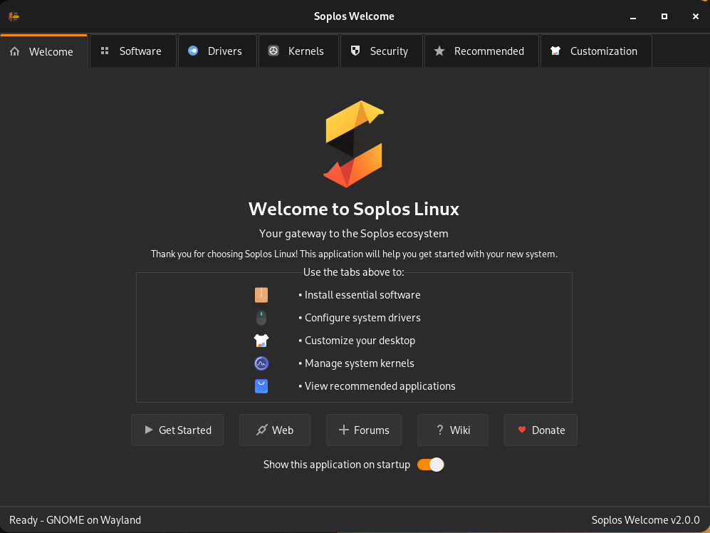
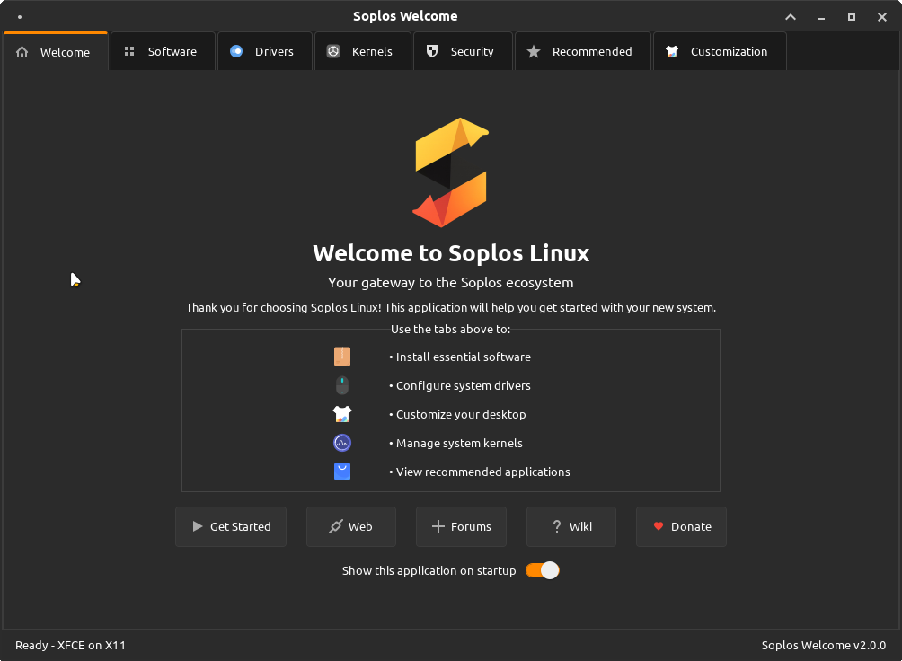
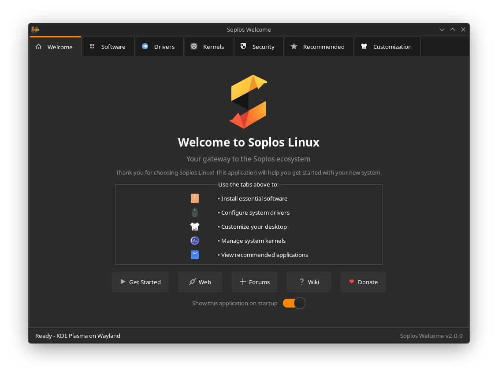

ES
ES FR
FR PT
PT DE
DE IT
IT RO
RO RU
RUOverview
Soplos Welcome is the all-in-one post-installation assistant for Soplos Linux. Built with a modular architecture, it adapts to your desktop environment (GNOME, KDE Plasma or XFCE) and provides seven specialized management tabs: drivers, kernels, software, recommended applications, security, customization, and a welcome screen with system information.
The application supports 8 languages with automatic detection, CSS-based theming that follows your system preferences, and uses privilege escalation (pkexec) for safe system-level operations. It integrates with APT, Flatpak, Snap and custom repositories to provide a comprehensive software management experience.
Key Features
- Hardware & Drivers: Automatic detection and installation of NVIDIA, AMD, Wi-Fi, printer, Bluetooth drivers and VM tools.
- Kernel Management: Install Liquorix and XanMod kernels (x64v3, x64v4, EDGE, LTS), CPU microcode updates and old kernel cleanup.
- Software Management: Desktop-adapted package management with Synaptic, Gdebi, Flatpak, Snap and Soplos Repo Selector.
- Recommended Apps: Curated catalog of 60+ applications across 8 categories with batch installation and search.
- Security & Protection: Timeshift backups, UFW firewall management, ClamAV antivirus, rkhunter and system cleaning tools.
- Desktop Customization: Soplos Tools (Theme Manager, Docklike, GRUB Editor, Plymouth Manager) and native desktop environment settings.
- Internationalization: Full support for 8 languages with automatic system language detection.
Screenshots


